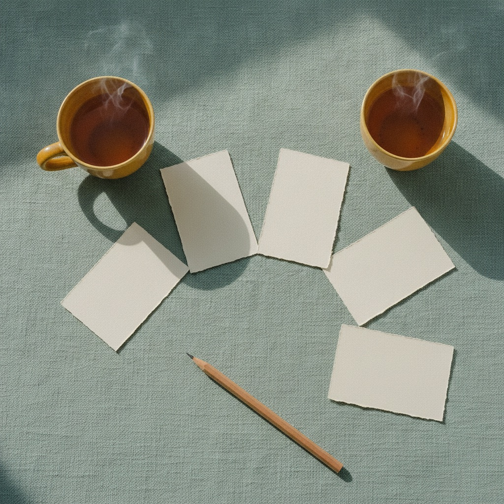
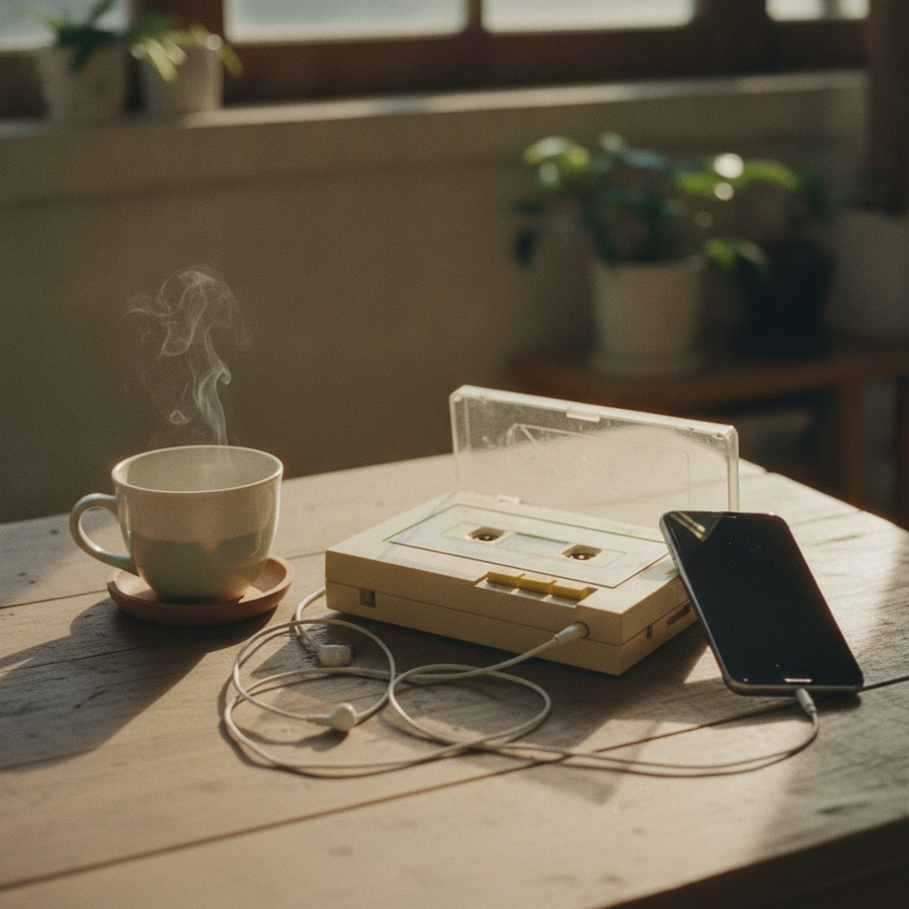
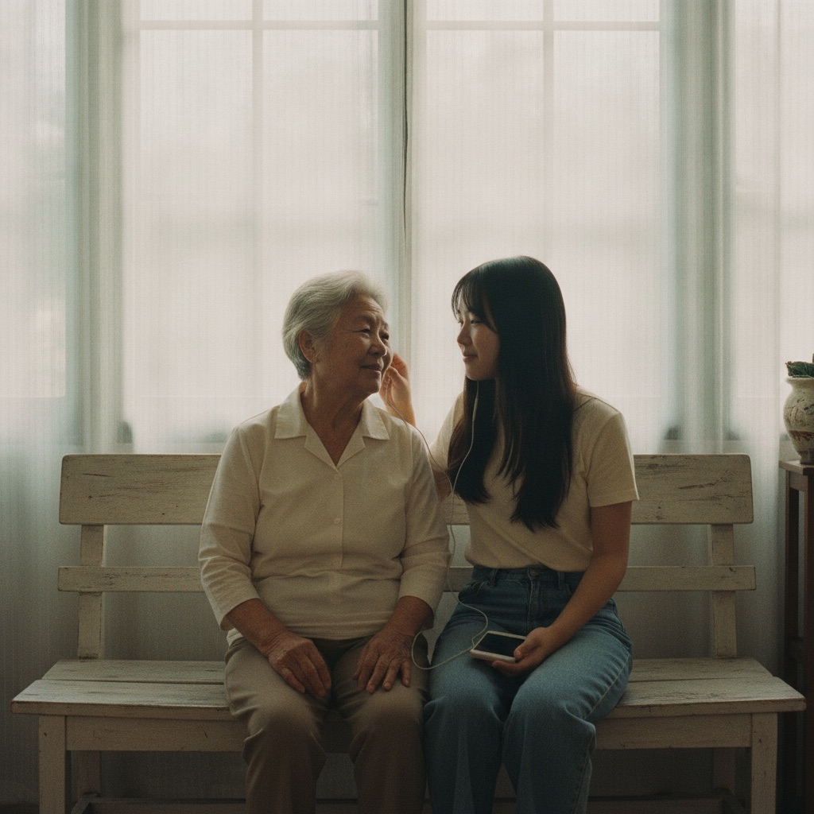

CH 01Conversation Cards
对话卡片
从问题卡里自己挑，随时可以跳过。Pick your own question. Skip any card.
…
有意义的代际连接，需要的是更多交流，还是更匹配的交流方式？Does meaningful connection across generations need more talk, or talk that fits?
“老人孤独，年轻人就该多陪伴。”“Elders are lonely, so visit and talk more.”
不同的节奏，也能组成稳定的和声。Different rhythms can still make a steady harmony.
* 示意配对，并非研究数据* Illustrative pairs, not research data

CH 01从问题卡里自己挑，随时可以跳过。Pick your own question. Skip any card.

CH 02各带一首歌，可以讲，也可以只一起听。Bring a song each. Explain it, or just listen.
一张老照片，就是话题的锚点。An old photo anchors the story.
散步、画画、整理，不说话也算连接。Walk, draw, tidy up. Silence counts.

“当两个人保持不同的节奏，
是否仍然能够认真听见彼此？”“Can two people keep different rhythms and still truly hear each other?”— Cynthia · 项目发起人Project lead
我们会尽快和你联系We’ll be in touch soon
Stored in this browser only (localStorage key sf-signups).
| Time | Role | Name | Age | Contact | Elder | Prefs | Note |
|---|